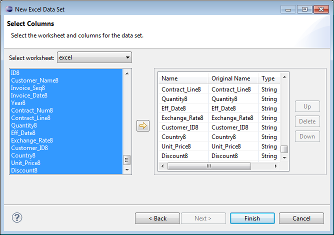
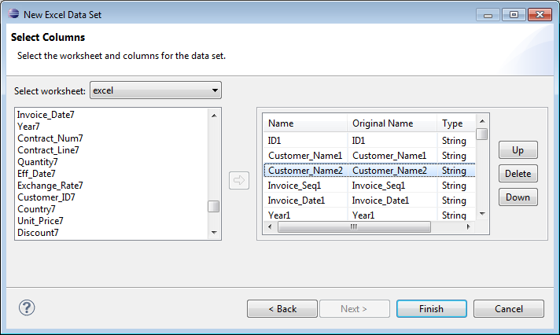
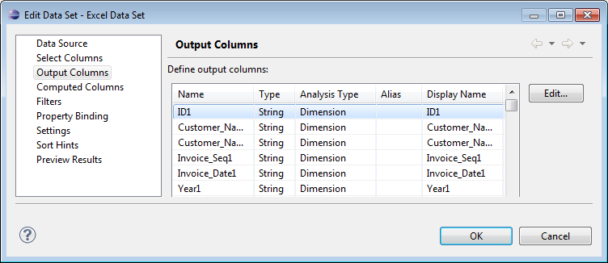
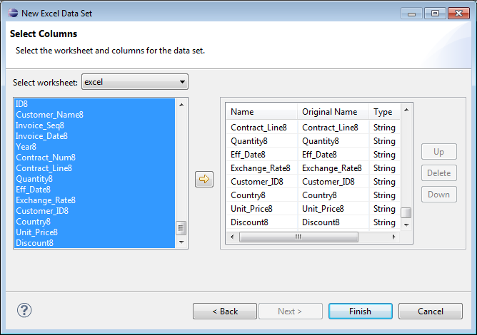
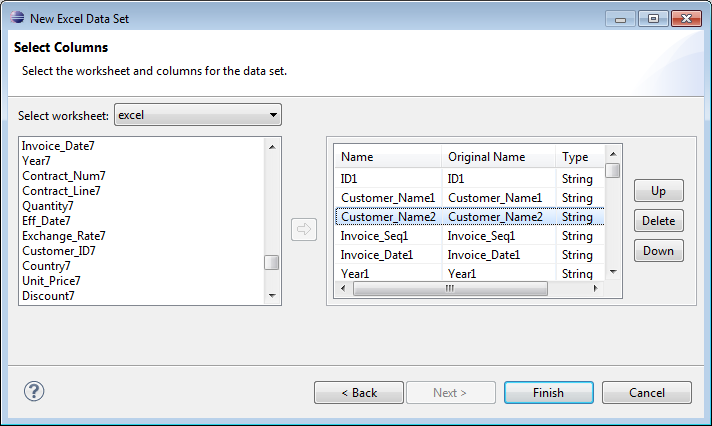
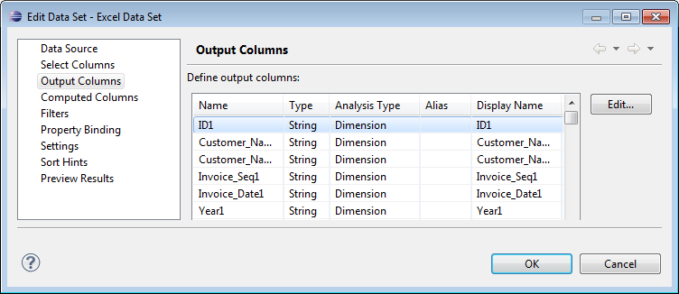

How to specify what data to retrieve from an Excel workbook 1 In Data Explorer, right-click Data Sets, then choose New Data Set. 2 In New Data Set, specify the following information: 1 In Data Source Selection, select the Excel workbook. Data Set Type displays Excel Data Set. 2 In Data Set Name, type a name for the data set. 3 Choose Next. 3 In New Excel Data Set, specify the data to retrieve: 1 In Select worksheet, select the worksheet from which to retrieve data. 2 In the left pane, select the columns to include in the report design, then choose the right arrow. The columns appear in the right pane, as shown in Figure 2-8.  Figure 2-8 Specifying data to retrieve from an Excel data source 3 To rearrange the columns, select a column in the right pane, and choose the up or down arrow to move the column in the list, as shown in Figure 2-9.  Figure 2-9 Rearranging columns in the Excel data set 4 To select columns from another worksheet, repeat substeps 1–3. 4 Choose Finish to save the data set. Edit Data Set displays the columns, and provides options for editing the data set, as shown in Figure 2-10.  Figure 2-10 Viewing output columns for an Excel data set 5 Choose Preview Results to view the data rows returned by the data set.


